Input da DatabaseImportare dei dati da dabase è una delle cose più spesso richieste. Con BuilderOne è molto semplice. Il metodo è quello di inserire una tabella in un frame e di esportare tutti i campi della tabella in relativi file. L'esportazione verrà fatta quando si seleziona un record. Per dimostrare come questo sia semplice dobbiamo creare un database e la relativa tabella con alcuni campi. Builder One lavora con tabelle con campi preferibilmente di tipo testo. Questo semplifica notevolmente la formattazione dei valori che possono essere di qualsiasi tipo e esportati sia in file che in altri database, magari di diverso formato, che comunque hanno i campi di tipo testo. Tali informazioni di tipo testo saranno poi trattate da BuilderOne e LabelOne come numeri o come stringhe in base al caso. Quindi si consiglia di fare database con campi sempre di tipo testo. Per creare un database possiamo usare lo strumento Database Manager presente nella barra degli strumenti 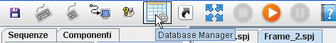 Il tipo di database può essere hsql oppure access senza dover installare niente. Se invece si ha un server di database come MySql o Sql(Microsoft) è possibile creare delle tabelle e strutture di tabelle, ma il database di solito è creato dal server con le opportune funzioni di cui è dotato. |
Per ora usiamo un comune Hsql che è una versione semplificata e StandAlone (non fa uso del server) di MySql. Dopo aver cliccato su Database Manager, scegliamo di creare un nuovo database. 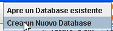 |
Poi inseriamo il Nome del database da creare, e selezioniamo HSQLDB come tipo di database. Se non tocchiamo la directory di lavoro, il database verrà messo nella cartella Data presente nel nostro progetto. In questo modo saremo sicuri di trasferire tutto ciò che ci occorre spostando la sola cartelle del progetto. Ora Confermiamo e passiamo al prossimo step. 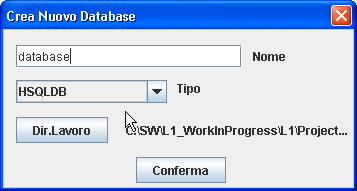 |
Si aprirà una finestra che ci consente di creare Tabelle, visionare i record delle Tabelle, di tesare comandi Sql, e di modificare la struttura di tabelle. Premiamo sul tasto Crea Nuova Tabella. 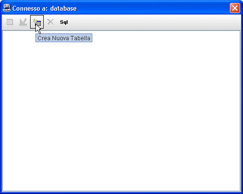 |
Inseriamo un nome per la tabella e poi premiamo OK 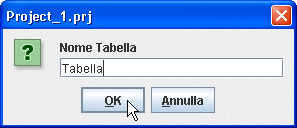 |
Selezioniamo la tabella e premiamo su Edita la Struttura della tabella selezionata. 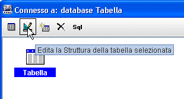 |
Premiamo sul pulsante "Aggiunge una riga" per inserire un nuovo campo. 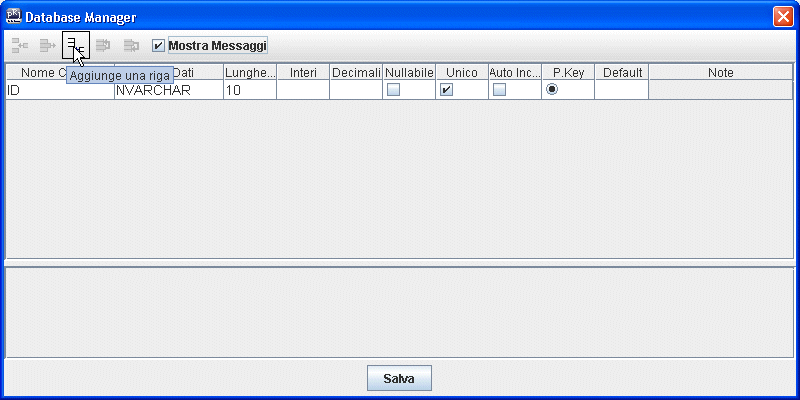 |
Poi editiamo il Nome Campo cliccando con il mouse e scriviamo Articolo. 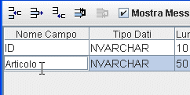 |
Creiamo altri due campi Ingredienti e PrezzoKg. Nel creare dei campi si consiglia di scegliere dei nomi che non contengano apostrofi parentesi, virgole spazi. Nella maggior parte dei casi BuilderOne pone rimedio all'uso di caratteri non consentiti, ma ci sono casi non contemplati che creerebbero problemi nel trattamento dei dati. 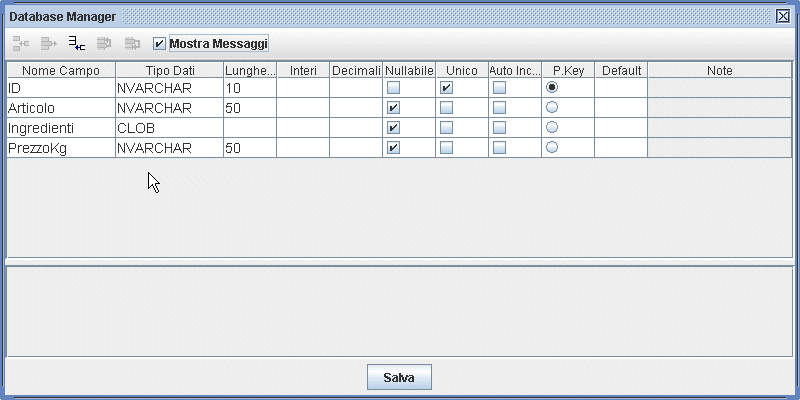 Conviene lasciare inalterate le altre opzioni. In una tabella serve sempre un P.Key (Chiave Primaria) Univoca. Questo consentirà di distinguere i record. La lunghezza di un campo non deve essere esagerata, perchè produce, in molti database, un appesantimanto dei dati e delle relative interrogazioni. Se è necessario è possibile scegliere un tipo senza lunghezza per quei dati che potrebbero superare qualsiasi aspettativa (CLOB). Ogni database ha un suo tipo di dati. BuilderOne non fa altro che elencarli. Per un help sui tipi è possibile cercare in internet. |
Ora popoliamo il database inserendo dei dati. Clicchiamo due volte sulla tabella. 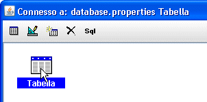 |
Si aprirà una nuova finestra dove possimo usare il pulsante "Insert new row". 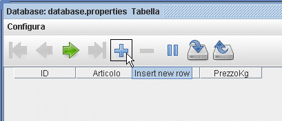 |
Inseriamo i dati nel record non dimenticando l'ID che essendo la chiave primaria è necessaria. Useremo ID come codice articolo. Ricordare di salvare "Save changes" prima di uscire. Usciamo da Database Manager. 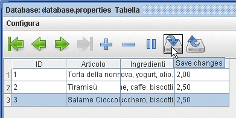 |
Ora non ci resta che inserire la tabella appena create in un nuovo frame. Creiamo il nuovo frame "SelezioneRecord", poi nel pannello "Componenti" nella sezione "InserimentoDati" selzioniamo "Tabella". 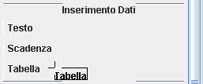 |
Spostiamoci sul frame SelezioneRecord posizioniamo il mouse in alto a sinistra e clicchiamo per inserire la tabella. Si aprirà una finstra per selezionare il tipo di database. Ci verrà proposto l'ultimo usato confermiamo 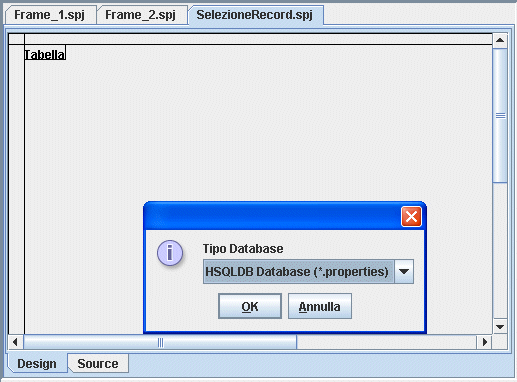 |
Selezioniamo il file database.properties che nel nostro caso è il database. 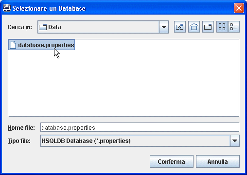 |
Confermiamo e selezioniamo la tabella da inserire nel frame. 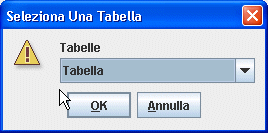 |
Il risultato ottenuto sarà il seguente. Non ci resta che dimensionare la tabella a nostro piacimento, e la dimesione del carattere per ottenere delle barre di scorrimento sufficientemente grosse da essere usate in applicazioni touch. Inseriamo il pulsante esci per poter uscire dal frame. 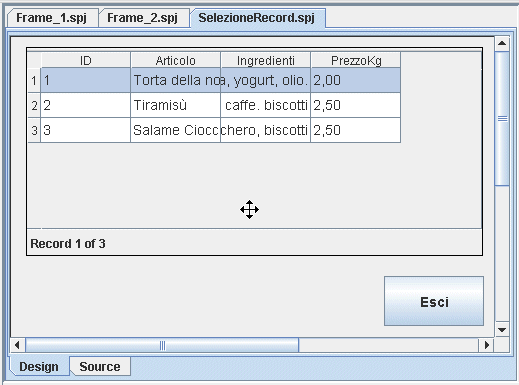 |
Per dimensionare le colonne bisogna "Attivare" la finestra Tabella. La tabella infatti è come se fosse coperta da un vetro, si puo spostare e dimensionare, ma non si può accedere nel suo interno. Per farlo alcune finestre hanno l'opzione Attiva Finestra. Cliccare con il tasto destro del mouse sulla tabella e selezionare "Attiva Finestra". 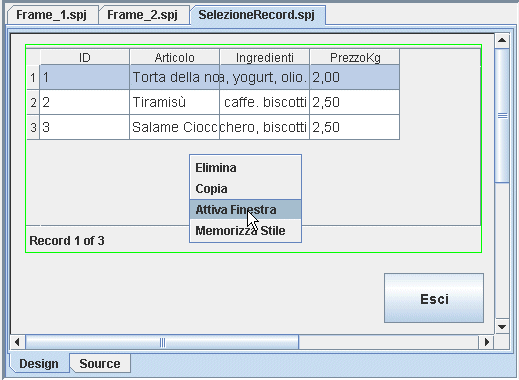 |
| Ora possimo "entrare nella finestra",
è come se avessimo tolto il vetro che la proteggeva.
Regoliamo la larghezza delle colonne trascinandole con il
mouse. 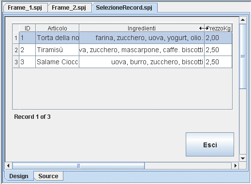 Per uscire dalla modalità "Finestra Attiva" basta cliccare con il mouse in un punto del frame all'esterno della finestra attiva. |
Dopo aver attivato la finestra come indicato nel paragrafo precedente, è possibile regolare l'altezza delle righe. Non è possibile fare righe con altezze diverse. L'altezza delle righe si regola sulla prima riga e risulterà uguale a quella delle altre righe. 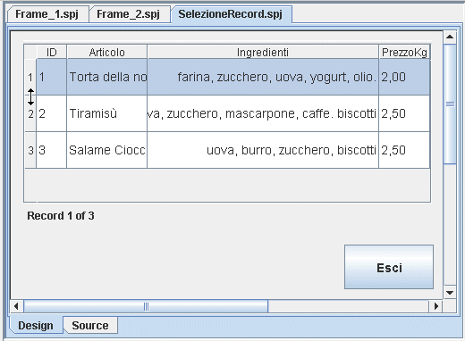 Per uscire dalla modalità "Finestra Attiva" basta cliccare con il mouse in un punto del frame all'esterno della finestra attiva. |
Per usare il componente Tabella non è necessario modificare le proprità qui sotto riportate. Tali proprità vengono settate automaticamente al momento dell'inserimento della tabella. 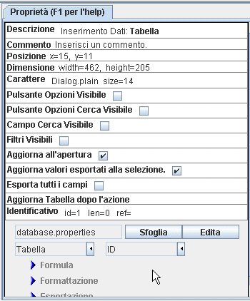 |
Permette di visualizzare una finestra per la ricerca del record. La ricerca è effetuata sul campo con cui è fatto il collegamento alla tabella. Questo poò esere visto nelle proprità della tabella alla destra del nome tabella. 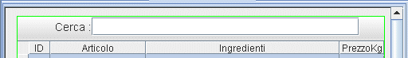 E' comunque possibile cambiare il campo su cui è fatta la ricerca utilizzando il polsante opzioni cerca. |
Permette di cambiare il campo su cui fare la ricerca. 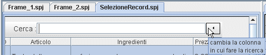 |
Permette di nascondere alcune colonne. Non bisogna nascondere la chiave primaria, perchè altrimente risulta impossibile fare delle ricerche. 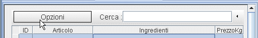 Premendo sul pulsante opzioni un menù permette di selezionare le opzioni. 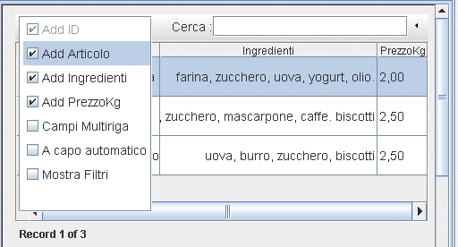 |
Per poter usare le informazioni presenti nel record dobbiamo esportare il record selezionato in una serie di file. Per fare questo flegghiamo "Esporta tutti i campi" nelle proprietà della tabella. 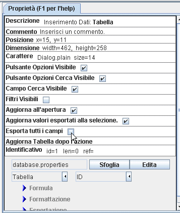 |
Cliccando per fleggare l'opzione, si apre una finestra 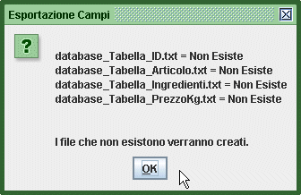 Sono riportati tutti i file in cui verrano salvati i vari campi della tabella. Il Nome di ogni file è costituito dal nome del database, dlla tabella, e del campo. La finestra serve non solo a vedere come si chiameranno i vari file, ma permette un controllo sui preesistenti file per evitare delle involontarie sovrascritture. I file vengono creati solo se si preme ok. Se si annulla l'operazione non viene creto niente. Laggiornamento dei file verrà fatto ad ogni selezione del record. |
| Per controllare i valori che abbiamo
esportato, o più in generale per usare i valori
esportati dal database, basterà usare i file relativi.
Nell'esempio HelloWorld inseriamo 4 finestre "Monitor
di file" per "vedere" quando i valori
vengono esportati. Prima selezioniamo "Monitor di file" nella sezione "Sentinelle" dell pannello "Componenti" poi portiamo il mouse sul frame SelezioneRecord e inseriamo il Monitor di file alla sinistra della tabella. Poi ricordiamoci di settare il file che il monitor deve osservare. Lo facciamo per tutti e quattro i file creati dalla finestra "Esportazione Campi". 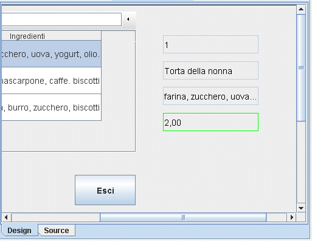 Ora eseguimo l'applicazione e controlliamo la variazione dei valori esportati quando clicchiamo su un record. |